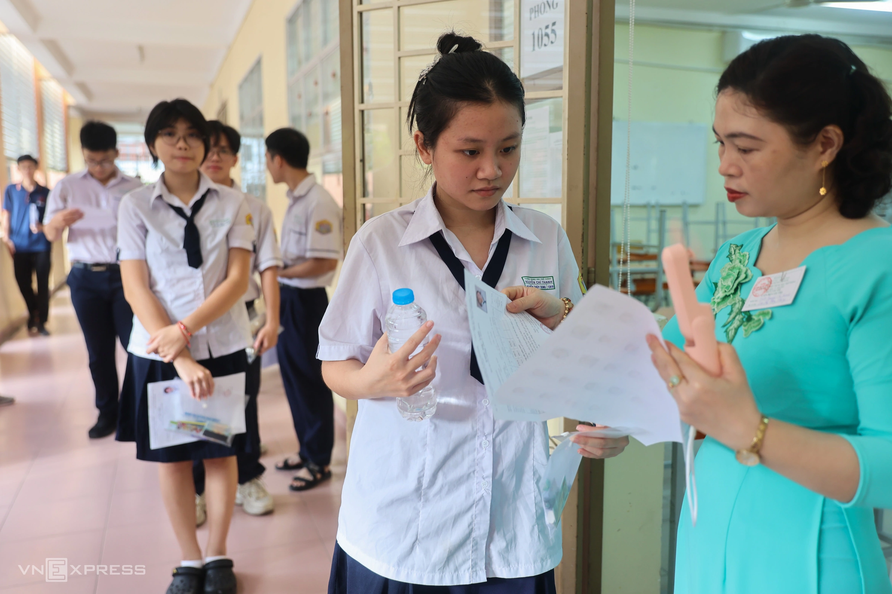

Các đại học thay đổi phương án xét tuyển năm 2025 thế nào?
Các trường bỏ xét tuyển sớm, không chia chỉ tiêu theo phương thức, thêm hàng loạt tổ hợp, và đang tính toán công thức quy đổi điểm theo thang chung, sau điều chỉnh của Bộ Giáo dục.
Học viện Ngân hàng tối 21/3 cho biết bỏ chia tỷ lệ chỉ tiêu theo phương thức xét tuyển như đề án dự kiến giữa tháng 2. Thời điểm đó, trường định tuyển 45% chỉ tiêu bằng điểm thi tốt nghiệp THPT. Các phương thức còn lại gồm xét tuyển thẳng, học bạ (20%), xét chứng chỉ quốc tế (15%), kết quả các kỳ thi đánh giá năng lực (20%).
Học viện Chính sách và Phát triển, Đại học Bách khoa Hà Nội, Kinh tế quốc dân... cũng tương tự.
Điều chỉnh này nhằm phù hợp với quy chế tuyển sinh đại học Bộ Giáo dục và Đào tạo vừa công bố. Theo đó, các trường vẫn được sử dụng nhiều phương thức nhưng phải xét chung đợt với điểm thi tốt nghiệp, đồng thời quy đổi điểm về thang chung, chẳng hạn thang 30.
Điều này đồng nghĩa thí sinh được xét theo điểm từ cao xuống thấp, không phân biệt phương thức, tổ hợp. Việc chia tỷ lệ chỉ tiêu theo các phương thức do đó không còn ý nghĩa.
Trước đó, hàng loạt trường năm ngoái xét tuyển sớm, thậm chí từ tháng 2-3, năm nay đã bỏ, ngay sau khi có dự thảo của Bộ.
Một thay đổi khác là nhiều trường mở rộng tổ hợp xét tuyển, do Bộ không giới hạn số lượng mà chỉ yêu cầu bắt buộc có Toán hoặc Ngữ văn với trọng số tối thiểu 25% tổng điểm.
Theo TS Nguyễn Thị Đông, Trưởng phòng Quản lý đào tạo Học viện Chính sách và Phát triển, bên cạnh các tổ hợp truyền thống, Học viện dự kiến bổ sung một số tổ hợp gồm Toán kết hợp với Tin học, hoặc Công nghệ và Tiếng Anh.
Tại Đại học Văn Lang, hầu hết ngành xét tuyển từ 6 tổ hợp trở lên, có ngành xét đến 19 tổ hợp. Đại học Sài Gòn cho thí sinh tự chọn tối đa hai trong ba môn thuộc tổ hợp.
Thạc sĩ Phạm Doãn Nguyên, Phó hiệu trưởng Đại học Hoa Sen, cho rằng tới đây, các trường sẽ tiếp tục có những thay đổi về phương thức, tổ hợp môn.

Thí sinh vào phòng thi tốt nghiệp THPT năm 2024 tại TP HCM. Ảnh: Quỳnh TrầnCùng những thay đổi trên, tất cả đại học đang tính toán công thức quy đổi điểm tương đương giữa các phương thức, tổ hợp xét tuyển.
Bộ cho biết sẽ đưa ra nguyên tắc chung và hướng dẫn các trường trong thời gian tới. Tuy nhiên, theo TS Trần Mạnh Hà, Trưởng phòng Đào tạo, Học viện Ngân hàng, có thể mỗi trường vẫn phải dựa trên dữ liệu riêng về đầu vào để xây dựng công thức.
Như vậy, tuy cùng xét tuyển bằng chứng chỉ quốc tế hay xét điểm thi đánh giá năng lực, công thức quy đổi giữa các trường có thể khác nhau.
"Việc quy đổi không thực hiện cơ học, tuyến tính, mà phụ thuộc vào phổ điểm, phân phối điểm giữa các phương thức, nhóm thí sinh xét tuyển vào từng trường", ông Hà nhìn nhận, cho hay một số trường ở miền Bắc đã thảo luận về việc này.
TS Lê Anh Đức, Trưởng phòng Quản lý đào tạo, Đại học Kinh tế Quốc dân cho hay trường dự kiến căn cứ dữ liệu đầu vào, kết quả học tập của hơn 20.000 sinh viên trong ba năm qua, xem xét phổ điểm thi tốt nghiệp THPT, đánh giá tư duy, năng lực năm nay để đưa ra quy tắc và công thức quy đổi.
Đại học Thương mại cũng thống kê kết quả học của thí sinh trúng tuyển bằng các phương thức, từ đó đánh giá tương quan chất lượng đầu vào và tìm ra công thức phù hợp, theo thạc sĩ Nguyễn Quang Trung, Phó trưởng Phòng truyền thông và Tuyển sinh.
Ngoài ra, TS Nguyễn Trung Nhân, Trưởng phòng Đào tạo, Đại học Công nghiệp TP HCM, cho rằng các trường còn phải cân nhắc, tính toán quy đổi điểm thưởng, điểm khuyến khích cho học sinh có thành tích nổi trội, sao cho không vượt quá 10% mức tối đa của thang điểm xét.
Ở trường của ông Nhân, việc này vướng mắc bởi những năm qua ưu tiên xét tuyển thẳng học sinh giỏi cấp tỉnh với điều kiện điểm thi tốt nghiệp THPT đạt ngưỡng đảm bảo chất lượng. Trường không quy định điểm chuẩn với nhóm này.
Dù còn phải tính toán nhiều, các trường đều nhấn mạnh thí sinh không nên lo lắng về việc quy đổi điểm. Thay vào đó, các em cần tập trung học tập tốt, ôn tập cho kỳ thi tốt nghiệp THPT và có thể tham dự một số bài thi đánh giá năng lực hoặc cải thiện điểm chứng chỉ quốc tế để gia tăng cơ hội trúng tuyển.
"Thí sinh chỉ cần quan tâm đến việc chọn ngành, trường, chuẩn bị thật tốt cho kỳ thi. Khi có kết quả, các em áp theo công thức sẽ ra điểm xét tuyển", ông Nhân khẳng định.